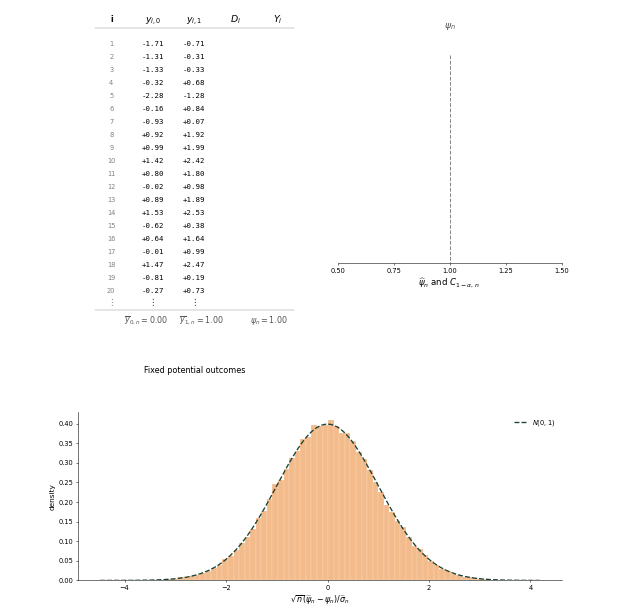
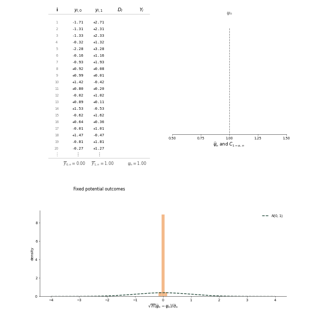

Uniform Inference on Treatment Group Means
This note develops confidence intervals for linear combinations of treatment group means in randomized experiments. We use a fixed potential-outcomes framework, impose a limited set of explicit and interpretable assumptions on the data-generating process, and establish uniform coverage properties over the parameter space. We then illustrate the behavior of the intervals in a Monte Carlo simulation.
Model
Experimental units are indexed by \(i = 1, 2, \ldots\). Each unit is assigned to either treatment or control. Let \(D_i\) denote a treatment indicator, with \(D_i = 1\) if unit \(i\) is assigned to treatment and \(D_i = 0\) otherwise. Let \(y_{i,d}\) denote the potential outcome for unit \(i\) under treatment \(d \in \{0, 1\}\). We condition on the full potential-outcome sequences \(\{y_{i,0}\}_{i \geq 1}\) and \(\{y_{i,1}\}_{i \geq 1}\), so probabilities are computed only over the randomized treatment assignments. The potential-outcome sequences may be generated by a broad class of processes; in particular, we do not assume they were generated independently across units or independently across treatment groups for a given unit.
Collect the model primitives into the parameter vector
\[ \theta = \left( p,\{y_{i,0}\}_{i=1}^\infty,\{y_{i,1}\}_{i=1}^\infty \right) \]
and let \(\Theta \subseteq (0, 1) \times \mathbb{R}^\mathbb{N} \times \mathbb{R}^\mathbb{N}\) denote the set of parameters under consideration. We impose the following assumptions on \(\Theta\).
Assumption 1 (Random assignment with uniformly bounded propensity). \(D_1, D_2, \ldots\) are independent Bernoulli random variables with common treatment probability \(p\), and there exists \(\underline p>0\) such that \(\underline p\leq p\leq1-\underline p\) for every \(\theta\in\Theta\).
In online experiments, randomization is typically performed by hashing unit identifiers into a finite number of buckets divided between treatment groups. In this case, Assumption 1 holds by taking \(\underline p\) to be the smallest permitted bucket fraction.
Let
\[ \overline{y}_{0,n} = \frac{1}{n}\sum_{i=1}^n y_{i,0}, \qquad \overline{y}_{1,n} = \frac{1}{n}\sum_{i=1}^n y_{i,1}, \qquad \overline{\mathbf{y}}_n = \begin{pmatrix} \overline{y}_{0,n} \\[1ex] \overline{y}_{1,n}\end{pmatrix}. \]
Define the centered potential-outcome vector
\[ \mathbf{u}_{i, n} = \begin{pmatrix} y_{i,0} - \overline{y}_{0,n} \\ y_{i,1} - \overline{y}_{1,n} \end{pmatrix} \]
and the covariance matrix
\[ \mathbf{V}_n = \frac{1}{n}\sum_{i=1}^n \mathbf{u}_{i, n} \mathbf{u}_{i, n}'. \tag{1}\]
We impose the following regularity conditions on these objects:
Assumption 2 (Uniform covariance regularity). Let \(\lambda_{\min}(\mathbf{V})\) and \(\lambda_{\max}(\mathbf{V})\) denote the smallest and largest eigenvalues of a symmetric matrix \(\mathbf{V}\). There exists a finite constant \(K\) for which
\[ \limsup_{n\to \infty} \sup_{\theta\in\Theta} \frac{\lambda_{\max}(\mathbf{V}_n)} {\lambda_{\min}(\mathbf{V}_n)} \leq K \]
Assumption 3 (Uniform Berry–Esseen condition). \(\mathbf{V}_n\) and \(\mathbf{u}_{i,n}\) satisfy
\[ \lim_{n \to \infty} \sup_{\theta\in\Theta} \frac{1}{n^{3/2}} \sum_{i=1}^n \left\| \mathbf{V}_n^{-1/2}\mathbf{u}_{i,n} \right\|^3 = 0. \tag{2}\]
Assumption 2 uniformly controls the condition numbers of the covariance matrices, while Assumption 3 ensures the Berry–Esseen bound vanishes uniformly over \(\Theta\). In the Appendix, we show that if candidate potential-outcome paths are modeled as realizations of a stationary ergodic process, then for any \(\epsilon>0\) there is a set of potential-outcome paths occurring with probability at least \(1-\epsilon\) such that Assumptions 2 and 3 hold after restricting \(\Theta\) to that set.
Finally, we impose the following stable unit treatment value assumption (SUTVA):
Assumption 4 (SUTVA). The observed outcome is determined by
\[Y_i = D_i y_{i, 1} + (1 - D_i) y_{i, 0}. \tag{3}\]
Assumption 4 requires unit \(i\)’s observed outcome to depend only on unit \(i\)’s treatment assignment and not on the treatment assignments of other units. This assumption can be restrictive in some experimental settings. For example, if \(i\) indexes user sessions, then Assumption 4 rules out treatment in one session changing potential outcomes in subsequent sessions. In practice, such spillovers can often be handled by randomizing at a coarser level.
We observe a finite sample \(\{(D_i, Y_i)\}_{i=1}^n\). For \(\theta\in\Theta\), we let \(\mathbb{P}_\theta\) denote probability under the random assignment mechanism in Assumption 1 and the observation equation in Assumption 4. We let \(\mathcal{P} = \{\mathbb{P}_\theta: \theta \in \Theta\}\) denote the set of possible probability measures.
Inference
Uniform asymptotics
Throughout this note, asymptotic statements are uniform over the family of distributions \(\mathcal{P}\) induced by the parameters in \(\Theta\). We first define the corresponding modes of convergence and stochastic-order notation, then record asymptotic results used in subsequent proofs.
We say \(X_n\) converges in \(\mathcal{P}\) to \(X\), written as \(X_n \stackrel{\mathcal{P}}{\to} X\), if for every \(\epsilon > 0\), \[ \lim_{n \to \infty} \sup_{\theta \in \Theta} \mathbb{P}_\theta(\|X_n - X\| > \epsilon) = 0. \]
Suppose \(X\) has distribution function \(F\) that does not depend on \(\theta\). We say \(X_n\) converges weakly in \(\mathcal{P}\) to \(X\), written as \(X_n \stackrel{\mathcal{P}}{\rightsquigarrow} X\), if for every continuity point \(t\) of \(F\), we have \[ \lim_{n \to \infty} \sup_{\theta \in \Theta} \left|\mathbb{P}_\theta(X_n \leq t) - F(t)\right| = 0. \] For finite-dimensional vector-valued random variables, we use the analogous definition with joint distribution functions. For a positive deterministic sequence \(r_n\), we write \(X_n=o_{\mathcal{P}}(r_n)\) if \(X_n/r_n \stackrel{\mathcal{P}}{\to} 0\). We write \(X_n=O_{\mathcal{P}}(r_n)\) if, for every \(\epsilon > 0\), there exist finite constants \(M\) and \(N\) such that \[ \sup_{\theta\in\Theta} \mathbb{P}_\theta\left(\|X_n\|>Mr_n\right) <\epsilon \] for all \(n\geq N\).
We will use the following stochastic-order relationships:
Proposition 1 (Stochastic order). For positive deterministic sequences \(r_n\) and \(s_n\), the following relationships hold:
\[ \begin{aligned} X_n=O_{\mathcal{P}}(r_n),\ Y_n=O_{\mathcal{P}}(s_n) &\quad\Rightarrow\quad X_n+Y_n=O_{\mathcal{P}}(r_n+s_n), \\[1ex] X_n=O_{\mathcal{P}}(r_n),\ Y_n=O_{\mathcal{P}}(s_n) &\quad\Rightarrow\quad X_nY_n=O_{\mathcal{P}}(r_ns_n), \\[1ex] X_n=o_{\mathcal{P}}(r_n),\ Y_n=O_{\mathcal{P}}(s_n) &\quad\Rightarrow\quad X_nY_n=o_{\mathcal{P}}(r_ns_n), \\[1ex] X_n=O_{\mathcal{P}}(r_n),\ r_n\to 0 &\quad\Rightarrow\quad X_n=o_{\mathcal{P}}(1), \\ X_n\stackrel{\mathcal{P}}{\rightsquigarrow}X &\quad\Rightarrow\quad X_n=O_{\mathcal{P}}(1). \end{aligned} \]
We will also use a uniform analogue of the continuous mapping theorem:
Proposition 2 (Continuous mapping). Suppose \(X_n\stackrel{\mathcal{P}}{\to}c\) for a constant \(c\). If \(g\) is continuous at \(c\), then
\[ g(X_n)\stackrel{\mathcal{P}}{\to}g(c). \]
If \(X_n\stackrel{\mathcal{P}}{\rightsquigarrow}X\) and \(g\) is continuous, then
\[ g(X_n)\stackrel{\mathcal{P}}{\rightsquigarrow}g(X). \]
The next result records useful joint-convergence rules:
Proposition 3 (Joint convergence). If \(X_n\stackrel{\mathcal{P}}{\to}X\) and \(Y_n\stackrel{\mathcal{P}}{\to}Y\), then
\[ (X_n,Y_n)\stackrel{\mathcal{P}}{\to}(X,Y). \]
If \(X_n\stackrel{\mathcal{P}}{\rightsquigarrow}X\) and \(Y_n\stackrel{\mathcal{P}}{\to}c\) for a real constant \(c\), then
\[ (X_n,Y_n)\stackrel{\mathcal{P}}{\rightsquigarrow}(X,c). \]
Propositions 2 and 3 imply a uniform version of Slutsky’s theorem:
Proposition 4 (Slutsky). Suppose \(X_n \stackrel{\mathcal{P}}{\rightsquigarrow} X\) and \(Y_n \stackrel{\mathcal{P}}{\to} c\) for a real constant \(c\). Then
\[ \begin{aligned} X_n + Y_n &\stackrel{\mathcal{P}}{\rightsquigarrow} X + c, \\ X_nY_n &\stackrel{\mathcal{P}}{\rightsquigarrow} cX, \\ \frac{X_n}{Y_n} &\stackrel{\mathcal{P}}{\rightsquigarrow} X/c,\qquad c\neq0. \end{aligned} \]
Proofs of these propositions can be found in the Appendix.
Target
We target a linear combination of the potential-outcome means. Define
\[\psi_n = \mathbf{a}_n' \overline{\mathbf{y}}_n\]
for a nonzero coefficient vector \(\mathbf{a}_n = (a_{0,n}, a_{1,n})'\). Setting \(\mathbf{a}_n = (1, 0)'\) or \(\mathbf{a}_n = (0, 1)'\) yields the control or treatment group mean, respectively, while setting \(\mathbf{a}_n = (-1, 1)'\) yields the average treatment effect (ATE). We allow the coefficient vector to change with \(n\), which will be useful in subsequent applications.
For \(\alpha \in (0, 1)\), let
\[C_{1-\alpha,n} = C_{1-\alpha,n}(D_1, \ldots, D_n, Y_1, \ldots, Y_n) \tag{4}\]
denote a confidence set for \(\psi_n\) with nominal coverage level \(1-\alpha\). The sequence \(\{C_{1-\alpha,n}\}_{n \geq 1}\) is finite-sample valid for \(\{\psi_n\}_{n \geq 1}\) over \(\Theta\) if, at each sample size, it covers the target with probability at least \(1 - \alpha\) for every parameter value:
\[\mathbb{P}_\theta\left(\psi_n \in C_{1-\alpha,n}\right) \geq 1 - \alpha \quad \text{ for all } n \geq 1 \text{ and } \theta \in \Theta. \tag{5}\]
This finite-sample condition is typically too demanding, so we use the following asymptotic criterion instead. We say the sequence \(\{C_{1-\alpha,n}\}_{n \geq 1}\) is asymptotically valid for \(\{\psi_n\}_{n\geq 1}\) over \(\Theta\) if
\[ \liminf_{n \to \infty} \inf_{\theta\in\Theta} \mathbb{P}_\theta\left(\psi_n \in C_{1-\alpha,n}\right) \geq 1 - \alpha. \tag{6}\]
If (6) holds, then for any \(\epsilon > 0\), there exists an index \(N\) such that \(C_{1-\alpha,n}\) contains \(\psi_n\) with probability at least \(1-\alpha-\epsilon\) for every \(n\geq N\) and every \(\theta\in\Theta\).
Estimator
We estimate \(\psi_n\) by replacing the potential-outcome means with the realized control and treatment sample means. Define
\[ \begin{gathered} \widehat{y}_{0,n} = \frac{\overline{Y(1 - D)}_n}{1 - \overline{D}_n}, \qquad \widehat{y}_{1,n} = \frac{\overline{YD}_n}{\overline{D}_n} \end{gathered} \tag{7}\]
and set
\[ \widehat{\mathbf{y}}_n = \begin{pmatrix} \widehat{y}_{0,n} \\ \widehat{y}_{1,n} \end{pmatrix}, \qquad \widehat{\psi}_n = \mathbf{a}_n'\widehat{\mathbf{y}}_n. \]
We estimate the sampling variance of \(\widehat{\psi}_n\) using
\[ \widehat{\sigma}_n^2 = \overline{D}_n(1-\overline{D}_n) \left( \frac{|a_{0,n}|\widehat{S}_{0,n}}{1-\overline{D}_n} + \frac{|a_{1,n}|\widehat{S}_{1,n}}{\overline{D}_n} \right)^2, \tag{8}\]
where
\[ \begin{aligned} \widehat{S}_{0,n}^2 &= \frac{1}{n(1-\overline{D}_n)} \sum_{i=1}^n (1-D_i)\left(Y_i - \widehat{y}_{0,n}\right)^2, \\ \widehat{S}_{1,n}^2 &= \frac{1}{n\overline{D}_n} \sum_{i=1}^n D_i\left(Y_i - \widehat{y}_{1,n}\right)^2 \end{aligned} \tag{9}\]
denote the observed within-group variances.
The key asymptotic expansion is derived in the Appendix:
\[ \sqrt{n}\left(\frac{\widehat{\psi}_n-\psi_n}{\widehat{\sigma}_n}\right) = \frac{\sum_{i=1}^n X_{i,n}}{\sigma_n}\frac{\sigma_n}{\widehat{\sigma}_n} + o_{\mathcal{P}}(1), \tag{10}\]
where
\[ X_{i,n} = \frac{D_i - p}{\sqrt{n}} \mathbf{b}_n'\mathbf{u}_{i,n}, \qquad \mathbf{b}_n = \begin{pmatrix} -\dfrac{a_{0,n}}{1-p} \\[2ex] \dfrac{a_{1,n}}{p} \end{pmatrix} \] \[ \sigma_n^2 = \sum_{i=1}^n \mathbb{V}(X_{i,n}) = p(1-p)\mathbf{b}_n'\mathbf{V}_n\mathbf{b}_n. \tag{11}\]
We will use this expansion to derive asymptotically an valid confidence interval for \(\{\psi_n\}_{n \geq 1}\).
Variance bound
We first show that \(\widehat{\sigma}_n^2\) is uniformly consistent for a population counterpart, then show this counterpart is an upper bound for the variance \(\sigma_n^2\) defined in (11). Let \[ \widetilde{\sigma}_n^2 = p(1-p) \left( \frac{|a_{0,n}|S_{0,n}}{1-p} + \frac{|a_{1,n}|S_{1,n}}{p} \right)^2 \tag{12}\]
where
\[ \begin{aligned} S_{0,n}^2 &= \frac{1}{n}\sum_{i=1}^n (y_{i,0} - \overline{y}_{0,n})^2, \\ S_{1,n}^2 &= \frac{1}{n}\sum_{i=1}^n (y_{i,1} - \overline{y}_{1,n})^2. \end{aligned} \tag{13}\]
\(\widetilde{\sigma}_n^2\) replaces the realized treatment share with the assignment probability and replaces the observed within-group variances with the corresponding population variances. In the Appendix, we show \[ \frac{\widehat{\sigma}_n^2}{\widetilde{\sigma}_n^2} \stackrel{\mathcal{P}}{\to} 1 \tag{14}\]
Using Cauchy–Schwarz to bound the cross term, we also have \[ \begin{aligned} \sigma_n^2 &= a_{0,n}^2\frac{p}{1-p}S_{0,n}^2 + a_{1,n}^2\frac{1-p}{p}S_{1,n}^2 \\ &\quad - 2a_{0,n}a_{1,n}\frac{1}{n}\sum_{i=1}^n (y_{i,0}-\overline{y}_{0,n})(y_{i,1}-\overline{y}_{1,n})\\ &\leq a_{0,n}^2\frac{p}{1-p}S_{0,n}^2 + a_{1,n}^2\frac{1-p}{p}S_{1,n}^2 + 2|a_{0,n}a_{1,n}|S_{0,n}S_{1,n} \\ &= \widetilde{\sigma}_n^2. \end{aligned} \tag{15}\]
Normal approximation
We next establish a uniform normal approximation for the leading sum in (10). Under Assumption 1, the summands \(X_{i,n}\) form a triangular array of row-wise independent, mean-zero random variables. For each \(i\), the absolute third moment of the standardized summand is \[ \begin{aligned} \mathbb{E}_\theta\left|\frac{X_{i,n}}{\sigma_n}\right|^3 &= \frac{\mathbb{E}_\theta|D_i-p|^3}{\{p(1-p)\}^{3/2}}\frac{1}{n^{3/2}} \frac{|\mathbf{b}_n'\mathbf{u}_{i,n}|^3}{(\mathbf{b}_n'\mathbf{V}_n\mathbf{b}_n)^{3/2}} \\[1ex] &= \frac{p^2+(1-p)^2}{\sqrt{p(1-p)}} \frac{1}{n^{3/2}} \frac{|\mathbf{b}_n'\mathbf{u}_{i,n}|^3}{(\mathbf{b}_n'\mathbf{V}_n\mathbf{b}_n)^{3/2}}. \end{aligned} \]
By the Cauchy–Schwarz inequality,
\[ |\mathbf{b}_n'\mathbf{u}_{i,n}| = \left|(\mathbf{V}_n^{1/2}\mathbf{b}_n)'\mathbf{V}_n^{-1/2}\mathbf{u}_{i,n}\right| \leq (\mathbf{b}_n'\mathbf{V}_n\mathbf{b}_n)^{1/2} \left\|\mathbf{V}_n^{-1/2}\mathbf{u}_{i,n}\right\|. \]
Therefore
\[ \mathbb{E}_\theta\left|\frac{X_{i,n}}{\sigma_n}\right|^3 \leq \frac{p^2+(1-p)^2}{\sqrt{p(1-p)}} \frac{1}{n^{3/2}} \left\|\mathbf{V}_n^{-1/2}\mathbf{u}_{i,n}\right\|^3. \]
Summing over \(i\), taking the supremum over \(\theta\in\Theta\), and using the lower bound on the assignment probabilities in Assumption 1, we have
\[ \begin{aligned} \sup_{\theta\in\Theta} \sum_{i=1}^n \mathbb{E}_\theta\left|\frac{X_{i,n}}{\sigma_n}\right|^3 &\leq \frac{1}{\sqrt{\underline p(1-\underline p)}} \sup_{\theta\in\Theta} \frac{1}{n^{3/2}}\sum_{i=1}^n\left\|\mathbf{V}_n^{-1/2}\mathbf{u}_{i,n}\right\|^3. \end{aligned} \]
The Berry–Esseen theorem for independent, non-identically distributed summands therefore gives the uniform bound
\[ \begin{aligned} \sup_{\theta\in\Theta} \sup_{t\in\mathbb{R}} \left| \mathbb{P}_\theta\left( \frac{\sum_{i=1}^n X_{i,n}}{\sigma_n} \leq t \right) - \Phi(t) \right| &\leq C\sup_{\theta\in\Theta} \sum_{i=1}^n\mathbb{E}_\theta\left|\frac{X_{i,n}}{\sigma_n}\right|^3 \\ &\leq \frac{C}{\sqrt{\underline p(1-\underline p)}} \sup_{\theta\in\Theta} \frac{1}{n^{3/2}}\sum_{i=1}^n\left\|\mathbf{V}_n^{-1/2}\mathbf{u}_{i,n}\right\|^3, \end{aligned} \tag{16}\]
where \(C\) is a finite universal constant. Therefore, by Assumption 3,
\[ \lim_{n\to\infty} \sup_{\theta\in\Theta} \left| \mathbb{P}_\theta\left( \frac{\sum_{i=1}^n X_{i,n}}{\sigma_n} \leq t \right) - \Phi(t) \right| =0 \tag{17}\] for every \(t\in\mathbb{R}\). Thus \[ \frac{\sum_{i=1}^n X_{i,n}}{\sigma_n} \stackrel{\mathcal{P}}{\rightsquigarrow} N(0, 1). \]
Confidence interval
We now form the confidence interval
\[ C_{1-\alpha,n} = \left[ \widehat{\psi}_n - z_{1-\alpha/2}\sqrt{\frac{\widehat{\sigma}_n^2}{n}}, \widehat{\psi}_n + z_{1-\alpha/2}\sqrt{\frac{\widehat{\sigma}_n^2}{n}} \right], \tag{18}\]
where \(z_{1-\alpha/2}\) is the \((1-\alpha/2)\) quantile of the standard normal distribution. The event that this interval covers \(\psi_n\) can be expressed as
\[ \sqrt{n}\left|\frac{\widehat{\psi}_n-\psi_n}{\widehat{\sigma}_n}\right|\leq z_{1-\alpha/2}. \]
Fix \(\epsilon\in(0,z_{1-\alpha/2})\) and define
\[ r_n = \sqrt{n}\frac{\widehat{\psi}_n-\psi_n}{\widehat{\sigma}_n} - \frac{\sum_{i=1}^n X_{i,n}}{\sigma_n}\frac{\sigma_n}{\widehat{\sigma}_n}. \]
By the triangle inequality and (15), we have
\[ \sqrt{n}\left|\frac{\widehat{\psi}_n-\psi_n}{\widehat{\sigma}_n}\right| \leq \left|\frac{\sum_{i=1}^n X_{i,n}}{\sigma_n}\right| \frac{\tilde{\sigma}_n}{\widehat{\sigma}_n} + \left|r_n\right|. \]
Therefore
\[ \left\{ \left|\frac{\sum_{i=1}^n X_{i,n}}{\sigma_n}\right| \leq \frac{z_{1-\alpha/2}-\epsilon}{1+\epsilon} \right\} \cap \left\{ \frac{\widetilde{\sigma}_n}{\widehat{\sigma}_n} \leq1+\epsilon \right\} \cap \left\{ \left|r_n\right| \leq\epsilon \right\} \subseteq \bigl\{\psi_n\in C_{1-\alpha,n}\bigr\}, \]
which implies
\[ \begin{aligned} \inf_{\theta\in\Theta} \mathbb{P}_\theta\left(\psi_n \in C_{1-\alpha, n}\right) &\geq \inf_{\theta\in\Theta} \mathbb{P}_\theta\left( \left|\frac{\sum_{i=1}^n X_{i,n}}{\sigma_n}\right| \leq \frac{z_{1-\alpha/2}-\epsilon}{1+\epsilon} \right) \\ &\quad - \sup_{\theta\in\Theta} \mathbb{P}_\theta\left( \frac{\widetilde{\sigma}_n}{\widehat{\sigma}_n} >1+\epsilon \right) - \sup_{\theta\in\Theta} \mathbb{P}_\theta\left(\left|r_n\right|>\epsilon\right). \end{aligned} \tag{19}\]
The second term tends to zero because of (14). The third term tends to zero by (10). For the first term, (17) gives
\[ \begin{aligned} \liminf_{n\to\infty} \inf_{\theta\in\Theta} \mathbb{P}_\theta\left(\psi_n \in C_{1-\alpha, n}\right) &\geq \Phi\left(\frac{z_{1-\alpha/2}-\epsilon}{1+\epsilon}\right)-\Phi\left(-\frac{z_{1-\alpha/2}-\epsilon}{1+\epsilon}\right). \end{aligned} \]
Letting \(\epsilon \downarrow 0\), we obtain
\[ \liminf_{n\to\infty} \inf_{\theta\in\Theta} \mathbb{P}_\theta\left(\psi_n \in C_{1-\alpha,n}\right) \geq \Phi(z_{1-\alpha/2}) - \Phi(-z_{1-\alpha/2}) = 1-\alpha. \tag{20}\]
Therefore \(\{C_{1-\alpha,n}\}_{n \geq 1}\) is asymptotically valid for \(\{\psi_n\}_{n \geq 1}\) over \(\Theta\).
Illustration
The animations below illustrate the sampling behavior of the confidence interval in (18). The left panel in each figure displays a fixed set of potential outcomes. In each frame, a new treatment assignment is drawn and the corresponding observed outcomes are shown. The potential outcomes do not change; all variation in the estimator and confidence interval comes from the randomized assignment. The right panel displays the resulting estimator for \(\psi_n = \overline{y}_{1,n} - \overline{y}_{0,n}\) and its corresponding \(95\%\) confidence interval, colored green when the interval contains \(\psi_n\) and red otherwise.
In the first animation, \(y_{i,1} = y_{i,0} + 1\) for every \(i\). The conservative bound in (15) coincides with the true variance, and the empirical coverage is close to the nominal \(95\%\) level.

The second animation uses \(y_{i,1} = -y_{i,0} + 1\). Here the two potential-outcome sequences are negatively correlated, making the conservative variance bound in (15) loose. The estimator variance is much lower than the bound, and the displayed intervals cover \(\psi_n\) in all realizations.

Appendix
A stationary ergodic motivation for the regularity assumptions
Suppose \(\mathbf{Y}_i = (Y_{i,0}, Y_{i,1})'\) is a stationary ergodic process. Let \(\mathbb{P}_\mathbf{Y}\) denote the process law for \(\mathbf{Y}\). Write
\[ \boldsymbol{\mu}=\mathbb{E}_\mathbf{Y}[\mathbf{Y}_1], \qquad \mathbf{M}=\mathbb{E}_\mathbf{Y}[\mathbf{Y}_1\mathbf{Y}_1'], \qquad \mathbf{V}=\mathbf{M}-\boldsymbol{\mu}\boldsymbol{\mu}'. \]
Assume
\[ \mathbb{E}_\mathbf{Y}\|\mathbf{Y}_1\|^3<\infty \]
and that \(\mathbf{V}\) is positive definite. By the ergodic theorem,
\[ \begin{gathered} \frac{1}{n}\sum_{i=1}^n\mathbf{Y}_i \to \boldsymbol{\mu}, \\[1ex] \frac{1}{n}\sum_{i=1}^n\mathbf{Y}_i\mathbf{Y}_i' \to \mathbf{M}, \\[1ex] \frac{1}{n}\sum_{i=1}^n\|\mathbf{Y}_i\|^3 \to \mathbb{E}_\mathbf{Y}\|\mathbf{Y}_1\|^3 \end{gathered} \]
with \(\mathbb{P}_\mathbf{Y}\)-probability one.
Fix \(\epsilon > 0\). By Egorov’s theorem, there exists a set \(E\) of paths with \(\mathbb{P}_\mathbf{Y}(E)>1-\epsilon\) such that these convergences hold uniformly on \(E\). Let \(\Theta\) be the set of parameters whose treatment probability satisfies Assumption 1 and whose potential-outcome path lies in \(E\). The uniform convergence of the first and second empirical moments implies
\[ \lim_{n\to\infty} \sup_{\theta\in\Theta} \left\| \mathbf{V}_n-\mathbf{V} \right\| =0. \]
Since \(\mathbf{V}\) is positive definite, it follows that, for all sufficiently large \(n\),
\[ \inf_{\theta\in\Theta} \lambda_{\min}(\mathbf{V}_n) \geq \frac{1}{2}\lambda_{\min}(\mathbf{V}), \qquad \sup_{\theta\in\Theta} \lambda_{\max}(\mathbf{V}_n) \leq 2\lambda_{\max}(\mathbf{V}). \tag{21}\]
Thus there exists a finite constant \(K_1\) and an index \(N_1\) such that, for all \(n\geq N_1\),
\[ \sup_{\theta\in\Theta} \frac{\lambda_{\max}(\mathbf{V}_n)} {\lambda_{\min}(\mathbf{V}_n)} \leq K_1. \]
It remains to check the Berry–Esseen condition. Using submultiplicativity of the operator norm together with the triangle inequality and Jensen’s inequality, we have
\[ \begin{aligned} \sup_{\theta\in\Theta} \frac{1}{n^{3/2}} \sum_{i=1}^n \left\| \mathbf{V}_n^{-1/2}\mathbf{u}_{i,n} \right\|^3 &\leq \frac{1}{\sqrt n} \sup_{\theta\in\Theta}\left\|\mathbf{V}_n^{-1/2}\right\|^3 \sup_{\theta\in\Theta} \frac{1}{n} \sum_{i=1}^n \left\| \mathbf{u}_{i,n} \right\|^3 \\ &\leq \frac{C}{\sqrt n} \sup_{\theta\in\Theta}\left\|\mathbf{V}_n^{-1/2}\right\|^3 \left[ \sup_{\theta\in\Theta} \frac{1}{n} \sum_{i=1}^n \left\| \mathbf{y}_i \right\|^3 + \sup_{\theta\in\Theta} \left\| \overline{\mathbf{y}}_n \right\|^3 \right]. \end{aligned} \tag{22}\]
The uniform lower eigenvalue bound in (21) implies
\[ \sup_{\theta\in\Theta} \left\|\mathbf{V}_n^{-1/2}\right\| \leq \left(\frac{2}{\lambda_{\min}(\mathbf{V})}\right)^{1/2} \]
for all sufficiently large \(n\). The bracketed term in (22) is also bounded uniformly for all sufficiently large \(n\) by the uniform convergence of the first and third empirical moments. Therefore, there is a finite constant \(K_2\) and an index \(N_2\) such that, for all \(n\geq N_2\),
\[ \sup_{\theta\in\Theta} \frac{1}{n^{3/2}} \sum_{i=1}^n \left\| \mathbf{V}_n^{-1/2}\mathbf{u}_{i,n} \right\|^3 \leq \frac{K_2}{\sqrt n}. \]
Take \(K=\max\{K_1,K_2\}\) and \(N=\max\{N_1,N_2\}\). Then, for all \(n\geq N\),
\[ \sup_{\theta\in\Theta} \frac{\lambda_{\max}(\mathbf{V}_n)} {\lambda_{\min}(\mathbf{V}_n)} \leq K, \qquad \sup_{\theta\in\Theta} \frac{1}{n^{3/2}} \sum_{i=1}^n \left\| \mathbf{V}_n^{-1/2}\mathbf{u}_{i,n} \right\|^3 \leq \frac{K}{\sqrt n}. \]
Therefore, after restricting \(\Theta\) to paths in \(E\),
\[ \limsup_{n\to \infty} \sup_{\theta\in\Theta} \frac{\lambda_{\max}(\mathbf{V}_n)} {\lambda_{\min}(\mathbf{V}_n)} \leq K, \qquad \lim_{n\to \infty} \sup_{\theta\in\Theta} \frac{1}{n^{3/2}} \sum_{i=1}^n \left\| \mathbf{V}_n^{-1/2}\mathbf{u}_{i,n} \right\|^3 = 0. \]
Proofs of the asymptotic propositions
Proposition 1 (Stochastic order)
For \(M>0\), write \(A_n^M=\{\|X_n\|>Mr_n\}\) and \(B_n^M=\{\|Y_n\|>Ms_n\}\).
Sum. Fix \(\epsilon>0\). By the two stochastic-order assumptions, we can choose finite constants \(M_X\) and \(M_Y\) and an index \(N\) so that
\[ \sup_{\theta\in\Theta}\mathbb{P}_\theta\left(A_n^{M_X}\right)<\epsilon/2, \qquad \sup_{\theta\in\Theta}\mathbb{P}_\theta\left(B_n^{M_Y}\right)<\epsilon/2 \]
for all \(n\geq N\). Taking \(M=\max\{M_X,M_Y\}\), the same bounds hold with \(M\) in place of \(M_X\) and \(M_Y\). On \(\left(A_n^{M}\right)^c\cap\left(B_n^{M}\right)^c\) we have \(\|X_n+Y_n\|\leq\|X_n\|+\|Y_n\|\leq M(r_n+s_n)\), so
\[ \sup_{\theta\in\Theta}\mathbb{P}_\theta\bigl(\|X_n+Y_n\|>M(r_n+s_n)\bigr) \leq \sup_{\theta\in\Theta}\mathbb{P}_\theta\left(A_n^{M}\right) + \sup_{\theta\in\Theta}\mathbb{P}_\theta\left(B_n^{M}\right) <\epsilon \]
for \(n\geq N\). Hence \(X_n+Y_n=O_{\mathcal{P}}(r_n+s_n)\).
Product. With the same \(M\) and \(N\), on \(\left(A_n^{M}\right)^c\cap\left(B_n^{M}\right)^c\) we have \(\|X_nY_n\|\leq\|X_n\|\,\|Y_n\|\leq M^2 r_ns_n\), so \(\sup_{\theta\in\Theta}\mathbb{P}_\theta(\|X_nY_n\|>M^2 r_ns_n)<\epsilon\) for \(n\geq N\). Hence \(X_nY_n=O_{\mathcal{P}}(r_ns_n)\).
Product with a vanishing factor. Suppose \(X_n=o_{\mathcal{P}}(r_n)\), and fix \(\epsilon>0\) and \(\delta>0\). Since \(Y_n=O_{\mathcal{P}}(s_n)\), we can choose \(M\) and \(N\) such that
\[ \sup_{\theta\in\Theta} \mathbb{P}_\theta\left(B_n^{M}\right)<\delta \]
for all \(n\geq N\). On \(\left(B_n^{M}\right)^c\), the event \(\|X_nY_n\|>\epsilon r_ns_n\) implies \(\|X_n\|>(\epsilon/M)r_n\), so
\[ \mathbb{P}_\theta(\|X_nY_n\|>\epsilon r_ns_n) \leq \mathbb{P}_\theta\bigl(\|X_n\|>(\epsilon/M)r_n\bigr) +\mathbb{P}_\theta\left(B_n^{M}\right). \]
Taking the supremum over \(\theta\) and the limit superior gives
\[ \begin{aligned} &\limsup_{n\to\infty} \sup_{\theta\in\Theta} \mathbb{P}_\theta(\|X_nY_n\|>\epsilon r_ns_n) \\ &\qquad\leq \limsup_{n\to\infty} \sup_{\theta\in\Theta} \mathbb{P}_\theta\bigl(\|X_n\|>(\epsilon/M)r_n\bigr) + \limsup_{n\to\infty} \sup_{\theta\in\Theta} \mathbb{P}_\theta\left(B_n^{M}\right) \leq \delta. \end{aligned} \]
Taking \(\delta\downarrow0\), we can conclude \(X_nY_n=o_{\mathcal{P}}(r_ns_n)\).
Vanishing rate. Suppose \(X_n=O_{\mathcal{P}}(r_n)\) with \(r_n\to 0\), and fix \(\delta>0\) and \(\epsilon>0\). Choose \(M\) and \(N_0\) with \(\sup_{\theta\in\Theta}\mathbb{P}_\theta\left(A_n^{M}\right)<\epsilon\) for \(n\geq N_0\). Since \(r_n\to 0\), there is \(N_1\) with \(Mr_n<\delta\) for \(n\geq N_1\). Therefore \(\{\|X_n\|>\delta\}\subseteq A_n^{M}\) and \(\sup_{\theta\in\Theta}\mathbb{P}_\theta(\|X_n\|>\delta)<\epsilon\) for \(n\geq\max(N_0,N_1)\). Since \(\epsilon>0\) was arbitrary, \(X_n=o_{\mathcal{P}}(1)\).
Weak convergence implies boundedness. Suppose \(X_n\stackrel{\mathcal{P}}{\rightsquigarrow}X\). Fix \(\epsilon>0\) and let \(F\) denote the distribution function of \(X\). Choose a finite constant \(K\) such that \(-K\) and \(K\) are continuity points of \(F\) and
\[ F(-K)+1-F(K)<\epsilon/2. \]
Since
\[ \mathbb{P}_\theta(|X_n|>K) \leq \mathbb{P}_\theta(X_n\leq -K) + 1-\mathbb{P}_\theta(X_n\leq K), \]
\(X_n\stackrel{\mathcal{P}}{\rightsquigarrow}X\) implies
\[ \limsup_{n\to\infty} \sup_{\theta\in\Theta} \mathbb{P}_\theta(|X_n|>K) \leq F(-K)+1-F(K) <\epsilon/2. \]
Thus, for all sufficiently large \(n\),
\[ \sup_{\theta\in\Theta} \mathbb{P}_\theta(|X_n|>K)<\epsilon. \]
Since \(\epsilon>0\) was arbitrary, \(X_n=O_{\mathcal{P}}(1)\).
Proposition 2 (Continuous mapping)
Fix \(\epsilon>0\). Since \(g\) is continuous at \(c\), there exists \(\delta>0\) such that
\[ \|z-c\|<\delta \quad\Rightarrow\quad \|g(z)-g(c)\|<\epsilon. \]
Therefore
\[ \left\{ \|g(X_n)-g(c)\|>\epsilon \right\} \subseteq \left\{ \|X_n-c\|>\delta/2 \right\}. \]
Taking probabilities and then the supremum over \(\theta\in\Theta\) gives
\[ \sup_{\theta\in\Theta} \mathbb{P}_\theta \left( \|g(X_n)-g(c)\|>\epsilon \right) \leq \sup_{\theta\in\Theta} \mathbb{P}_\theta \left( \|X_n-c\|>\delta/2 \right). \]
The right-hand side tends to zero because \(X_n\stackrel{\mathcal{P}}{\to}c\). Since \(\epsilon>0\) was arbitrary, \(g(X_n)\stackrel{\mathcal{P}}{\to}g(c)\).
For the weak-convergence statement, we will make use of the following lemma:
Lemma 1 (Uniform convergence on continuity sets). Suppose \(X_n\stackrel{\mathcal{P}}{\rightsquigarrow}X\), where \(X_n\) and \(X\) take values in \(\mathbb{R}^k\). If \(A\) is a Borel set with \(\mathbb{P}(X\in\partial A)=0\), then
\[ \lim_{n\to \infty}\sup_{\theta\in\Theta} \left| \mathbb{P}_\theta(X_n\in A)-\mathbb{P}(X\in A) \right| = 0. \]
Proof. Let \(F\) denote the joint distribution function of \(X\) and fix \(\gamma>0\). Because probability measures on \(\mathbb{R}^k\) are regular and the boundary of \(A\) has zero probability under the distribution of \(X\), we can find finite unions of disjoint half-open rectangles \(A_-\) and \(A_+\), with all corners at continuity points of \(F\), such that
\[ A_-\subseteq A\subseteq A_+, \qquad \mathbb{P}(X\in A_+\setminus A_-)<\gamma. \]
Write \[ A_+=\bigcup_{j=1}^{J_+} R_{+,j}, \qquad R_{+,j}=\prod_{\ell=1}^k(a_{j\ell},b_{j\ell}], \]
where the rectangles are disjoint and all corners of all \(R_{+,j}\) are continuity points of \(F\). For any such rectangle, \(\mathbb{P}_\theta(X_n\in R_{+,j})\) and \(\mathbb{P}(X\in R_{+,j})\) can be written by inclusion-exclusion as finite sums of joint distribution-function values at the corners of \(R_{+,j}\). Uniform convergence of the joint distribution functions at those corners therefore implies
\[ \sup_{\theta\in\Theta} \left| \mathbb{P}_\theta(X_n\in R_{+,j})-\mathbb{P}(X\in R_{+,j}) \right| \to 0 \]
for each \(j\). Summing over the finitely many rectangles yields
\[ \begin{gathered} \sup_{\theta\in\Theta} \left| \mathbb{P}_\theta(X_n\in A_+)-\mathbb{P}(X\in A_+) \right| \to 0. \end{gathered} \tag{23}\]
The same argument applied to \(A_-\) gives
\[ \begin{gathered} \sup_{\theta\in\Theta} \left| \mathbb{P}_\theta(X_n\in A_-)-\mathbb{P}(X\in A_-) \right| \to 0. \end{gathered} \tag{24}\]
Since \(A\subseteq A_+\),
\[ \begin{aligned} \mathbb{P}_\theta(X_n\in A)-\mathbb{P}(X\in A) &\leq \left\{\mathbb{P}_\theta(X_n\in A_+)-\mathbb{P}(X\in A_+)\right\} \\[1ex] &\quad+ \left\{\mathbb{P}(X\in A_+)-\mathbb{P}(X\in A)\right\}\\[1ex] &<\left\{\mathbb{P}_\theta(X_n\in A_+)-\mathbb{P}(X\in A_+)\right\} + \gamma. \end{aligned} \]
Taking the supremum over \(\theta\) and using (23), we can conclude
\[ \limsup_{n\to\infty} \sup_{\theta\in\Theta} \left\{ \mathbb{P}_\theta(X_n\in A)-\mathbb{P}(X\in A) \right\} \leq \gamma. \]
Similarly, since \(A_-\subseteq A\),
\[ \begin{aligned} \mathbb{P}(X\in A)-\mathbb{P}_\theta(X_n\in A) &\leq \left\{\mathbb{P}(X\in A_-)-\mathbb{P}_\theta(X_n\in A_-)\right\} \\[1ex] &\quad+ \left\{\mathbb{P}(X\in A)-\mathbb{P}(X\in A_-)\right\} \\[1ex] &< \left\{\mathbb{P}(X\in A_-)-\mathbb{P}_\theta(X_n\in A_-)\right\}+\gamma. \end{aligned} \]
Using (24) gives
\[ \limsup_{n\to\infty} \sup_{\theta\in\Theta} \left\{ \mathbb{P}(X\in A)-\mathbb{P}_\theta(X_n\in A) \right\} \leq \gamma. \]
Therefore
\[ \limsup_{n\to\infty} \sup_{\theta\in\Theta} \left|\mathbb{P}(X\in A)-\mathbb{P}_\theta(X_n\in A)\right| \leq \gamma. \]
The desired convergence follows by taking \(\gamma \downarrow 0\). \(\square\)
Returning to the weak-convergence statement, let \(H\) denote the distribution function of \(g(X)\). Fix a continuity point \(t\) of \(H\) and let
\[ A_t=\{z:g(z)\leq t\}. \]
The inequality is componentwise if \(g\) is vector-valued. Since \(g\) is continuous, \(\partial A_t\) is contained in \(\{z:g(z)\in\partial(-\infty,t]\}\). Since \(t\) is a continuity point of \(H\),
\[ \mathbb{P}(X\in\partial A_t) \leq \mathbb{P}\left(g(X)\in\partial(-\infty,t]\right) =0. \]
Applying the lemma to \(A_t\) gives
\[ \begin{aligned} \sup_{\theta\in\Theta} \left| \mathbb{P}_\theta(g(X_n)\leq t)-H(t) \right| &= \sup_{\theta\in\Theta} \left| \mathbb{P}_\theta(X_n\in A_t)-\mathbb{P}(X\in A_t) \right| \\ &\to 0. \end{aligned} \]
Thus \(g(X_n)\stackrel{\mathcal{P}}{\rightsquigarrow}g(X)\).
Proposition 3 (Joint convergence)
First suppose \(X_n\stackrel{\mathcal{P}}{\to}X\) and \(Y_n\stackrel{\mathcal{P}}{\to}Y\). For every \(\epsilon>0\),
\[ \left\{ \|(X_n,Y_n)-(X,Y)\|>\epsilon \right\} \subseteq \left\{ \|X_n-X\|>\epsilon/2 \right\} \cup \left\{ \|Y_n-Y\|>\epsilon/2 \right\}. \]
Taking probabilities, taking the supremum over \(\theta\in\Theta\), and using the two marginal convergences proves
\[ (X_n,Y_n)\stackrel{\mathcal{P}}{\to}(X,Y). \]
Now suppose \(X_n\stackrel{\mathcal{P}}{\rightsquigarrow}X\) and \(Y_n\stackrel{\mathcal{P}}{\to}c\) for a real constant \(c\). Let \(F\) denote the joint distribution function of \(X\) and let \(H\) denote the joint distribution function of \((X,c)\), so
\[ H(s,t)=F(s)\mathbf{1}\{c\leq t\}. \]
Fix a continuity point \((s,t)\) of \(H\). If \(t<c\), then \(H(s,t)=0\) and
\[ \sup_{\theta\in\Theta} \mathbb{P}_\theta(X_n\leq s,Y_n\leq t) \leq \sup_{\theta\in\Theta} \mathbb{P}_\theta\left(|Y_n-c|>\frac{c-t}{2}\right) \to 0. \]
If \(t=c\), then continuity of \(H\) at \((s,c)\) implies \(F(s)=0\) and that \(s\) is a continuity point of \(F\). Thus \(H(s,c)=0\) and
\[ \sup_{\theta\in\Theta} \mathbb{P}_\theta(X_n\leq s,Y_n\leq c) \leq \sup_{\theta\in\Theta} \mathbb{P}_\theta(X_n\leq s) \to 0. \]
If \(t>c\), then continuity of \(H\) implies that \(s\) is a continuity point of \(F\). Since \(H(s,t)=F(s)\),
\[ \begin{aligned} &\sup_{\theta\in\Theta} \left| \mathbb{P}_\theta(X_n\leq s,Y_n\leq t)-F(s) \right| \\ &\qquad\leq \sup_{\theta\in\Theta} \left| \mathbb{P}_\theta(X_n\leq s)-F(s) \right| + \sup_{\theta\in\Theta} \mathbb{P}_\theta(|Y_n-c|>t-c) \to 0. \end{aligned} \]
Thus the joint distribution functions converge uniformly at every continuity point of \(H\), so
\[ (X_n,Y_n)\stackrel{\mathcal{P}}{\rightsquigarrow}(X,c). \]
Proposition 4 (Slutsky)
By Proposition 3,
\[ (X_n,Y_n)\stackrel{\mathcal{P}}{\rightsquigarrow}(X,c). \]
The first two convergence statements then follow from Proposition 2 applied to the continuous maps \((x,y)\mapsto x+y\) and \((x,y)\mapsto xy\). For the quotient statement, assume \(c\neq0\). The map \(y\mapsto 1/y\) is continuous at \(c\). Thus Proposition 2 gives \(1/Y_n\stackrel{\mathcal{P}}{\to}1/c\). Applying Proposition 3 to \(X_n\) and \(1/Y_n\) gives
\[ \left(X_n,\frac{1}{Y_n}\right) \stackrel{\mathcal{P}}{\rightsquigarrow} \left(X,\frac{1}{c}\right), \]
and Proposition 2 applied to \((x,y)\mapsto xy\) gives
\[ \frac{X_n}{Y_n}\stackrel{\mathcal{P}}{\rightsquigarrow}\frac{X}{c}. \]
Estimator asymptotics
Notation and auxiliary lemmas
For \(d\in\{0,1\}\), let
\[ u_{i,d,n} = y_{i,d} - \overline{y}_{d,n} \]
and let \(D_{i,1}=D_i\), \(D_{i,0}=1-D_i\), \(p_1=p\), \(p_0=1-p\), and
\[ \overline{D}_{d,n}=\frac{1}{n}\sum_{i=1}^n D_{i,d}. \]
Also define
\[ b_{0,n}=\frac{|a_{0,n}|S_{0,n}}{1-p}, \qquad b_{1,n}=\frac{|a_{1,n}|S_{1,n}}{p}, \qquad B_n=b_{0,n}+b_{1,n}. \]
Proof. Under Assumption 1, \(D_{1,d},\ldots,D_{n,d}\) are independent Bernoulli random variables with probability \(p_d\). Hence
\[ \mathbb{E}_\theta(\overline{D}_{d,n})=p_d, \qquad \mathbb{V}_\theta(\overline{D}_{d,n})=\frac{p_d(1-p_d)}{n}. \]
For every \(\epsilon>0\), Chebyshev’s inequality gives
\[ \begin{aligned} \sup_{\theta\in\Theta} \mathbb{P}_\theta\left( \left|\overline{D}_{d,n}-p_d\right|>\epsilon \right) &\leq \frac{1}{\epsilon^2} \sup_{\theta\in\Theta} \frac{p_d(1-p_d)}{n} \\ &\leq \frac{1}{4\epsilon^2 n} \\[2ex] &\to 0. \end{aligned} \]
Thus \(\overline{D}_{d,n}\stackrel{\mathcal{P}}{\to}p_d\). Also, for every \(M>0\),
\[ \begin{aligned} \sup_{\theta\in\Theta} \mathbb{P}_\theta\left( \left|\sqrt n(\overline{D}_{d,n}-p_d)\right|>M \right) &\leq \frac{1}{M^2} \sup_{\theta\in\Theta}p_d(1-p_d) \\ &\leq \frac{1}{4M^2}. \end{aligned} \]
Therefore \(\sqrt n(\overline{D}_{d,n}-p_d)=O_{\mathcal{P}}(1)\). \(\square\)
Lemma 3 (Marginal leverage bound). For each \(d\in\{0,1\}\),
\[ \lim_{n\to\infty} \sup_{\theta\in\Theta} \max_{1\leq i\leq n} \frac{|u_{i,d,n}|}{\sqrt n\,S_{d,n}} =0. \tag{25}\]
Proof. Let \(\mathbf{e}_d\) denote the coordinate vector corresponding to treatment state \(d\). Then
\[ \begin{aligned} |u_{i,d,n}| &= \left|\mathbf{e}_d'\mathbf{u}_{i,n}\right| \\ &= \left| \left(\mathbf{V}_n^{1/2}\mathbf{e}_d\right)' \mathbf{V}_n^{-1/2}\mathbf{u}_{i,n} \right| \\ &\leq \left\|\mathbf{V}_n^{1/2}\mathbf{e}_d\right\| \left\|\mathbf{V}_n^{-1/2}\mathbf{u}_{i,n}\right\| \\ &= S_{d,n} \left\|\mathbf{V}_n^{-1/2}\mathbf{u}_{i,n}\right\| \end{aligned} \]
Therefore \[ \begin{aligned} \max_{1\leq i\leq n} \frac{|u_{i,d,n}|}{\sqrt n\,S_{d,n}} &\leq \max_{1\leq i\leq n} \frac{\|\mathbf{V}_n^{-1/2}\mathbf{u}_{i,n}\|}{\sqrt n} \\ &\leq \left( \frac{1}{n^{3/2}} \sum_{i=1}^n\|\mathbf{V}_n^{-1/2}\mathbf{u}_{i,n}\|^3 \right)^{1/3}. \end{aligned} \] The result then follows from Assumption 3. \(\square\)
Derivation of (10)
Define \[ U_{d,n} = \frac{1}{n}\sum_{i=1}^n (D_i-p)(y_{i,d}-\overline{y}_{d,n}), \qquad d\in\{0,1\}. \]
Using \(\sum_{i=1}^n (y_{i,d} - \overline{y}_{d,n}) = 0\), we can write
\[ \begin{aligned} \widehat{y}_{0,n} - \overline{y}_{0,n} &= -\frac{1}{n(1-\overline{D}_n)}\sum_{i=1}^n (D_i - p)(y_{i,0} - \overline{y}_{0,n})\\[2ex] &= -\dfrac{U_{0,n}}{1-\overline{D}_n}, \\[2ex] \widehat{y}_{1,n} - \overline{y}_{1,n} &= \frac{1}{n\,\overline{D}_n}\sum_{i=1}^n (D_i - p)(y_{i,1} - \overline{y}_{1,n}) \\[2ex] &= \dfrac{U_{1,n}}{\overline{D}_n} \end{aligned} \]
We therefore have
\[ \begin{aligned} \sqrt{n}\left(\widehat{\psi}_n-\psi_n\right) &= \sqrt{n}\left(a_{0,n}\left(\widehat{y}_{0,n}-\overline{y}_{0,n}\right) + a_{1,n}\left(\widehat{y}_{1,n}-\overline{y}_{1,n}\right)\right) \\[2ex] &= \sqrt{n}\left(-\frac{a_{0,n} U_{0,n}}{1-\overline{D}_n} + \frac{a_{1,n} U_{1,n}}{\overline{D}_n}\right) \\[2ex] &= \sqrt{n}\left(-\frac{a_{0,n} U_{0,n}}{1-p} + \frac{a_{1,n} U_{1,n}}{p}\right) + \sqrt{n}\left(\frac{a_{0,n} U_{0,n}}{1-p} - \frac{a_{0,n} U_{0,n}}{1-\overline{D}_n} + \frac{a_{1,n} U_{1,n}}{\overline{D}_n} - \frac{a_{1,n} U_{1,n}}{p}\right) \\[2ex] &= \sum_{i=1}^n X_{i,n} + R_n, \end{aligned} \tag{26}\]
where
\[ \begin{aligned} \sum_{i = 1}^n X_{i,n} &= \sqrt{n}\left(-\frac{a_{0,n} U_{0,n}}{1-p} + \frac{a_{1,n} U_{1,n}}{p}\right), \\[2ex] R_n &= -\sqrt{n}\left(\overline{D}_n-p\right) \left[ \frac{a_{0,n}}{(1-\overline{D}_n)(1-p)}U_{0,n} + \frac{a_{1,n}}{\overline{D}_n\,p}U_{1,n} \right]. \end{aligned} \]
Dividing (26) by \(\widehat{\sigma}_n\) gives
\[ \begin{aligned} \sqrt{n}\left(\frac{\widehat{\psi}_n-\psi_n}{\widehat{\sigma}_n}\right) &= \frac{\sum_{i=1}^n X_{i,n}}{\sigma_n} \frac{\sigma_n}{\widehat{\sigma}_n} +\frac{R_n}{\widehat{\sigma}_n} \\ &= \frac{\sum_{i=1}^n X_{i,n}}{\sigma_n} \frac{\sigma_n}{\widehat{\sigma}_n} + \frac{R_n}{\widetilde{\sigma}_n} \frac{\widetilde{\sigma}_n}{\widehat{\sigma}_n}. \end{aligned} \tag{27}\]
Since (14) implies \(\widetilde{\sigma}_n/\widehat{\sigma}_n\stackrel{\mathcal{P}}{\to}1\), it suffices by Propositions 2 and 3 to show \(R_n/\widetilde{\sigma}_n \stackrel{\mathcal{P}}{\to} 0\).
First observe that \[ \begin{aligned} \frac{|R_n|}{\widetilde{\sigma}_n} &= \frac{\left|\sqrt n(\overline{D}_n-p)\right|}{\sqrt{p(1-p)}B_n} \left| \frac{a_{0,n}}{(1-\overline{D}_n)(1-p)}U_{0,n} + \frac{a_{1,n}}{\overline{D}_n p}U_{1,n} \right| \\[2ex] &\leq \frac{\left|\sqrt n(\overline{D}_n-p)\right|}{\sqrt{p(1-p)}} \left[ \frac{b_{0,n}}{B_n} \frac{1}{1-\overline{D}_n} \left|\frac{U_{0,n}}{S_{0,n}}\right| + \frac{b_{1,n}}{B_n} \frac{1}{\overline{D}_n} \left|\frac{U_{1,n}}{S_{1,n}}\right| \right]. \end{aligned} \]
On the event \(\left\{|\overline{D}_n-p|\leq\underline p/2\right\}\), \(1 - \overline{D}_n \geq \underline p/2\) and \(\overline{D}_n \geq \underline p/2\) so that \[ \begin{aligned} \frac{|R_n|}{\widetilde{\sigma}_n} &\leq C_{\underline p}\left|\sqrt n(\overline{D}_n-p)\right| \left[ \frac{b_{0,n}}{B_n} \left|\frac{U_{0,n}}{S_{0,n}}\right| + \frac{b_{1,n}}{B_n} \left|\frac{U_{1,n}}{S_{1,n}}\right| \right], \end{aligned} \tag{28}\]
where
\[ C_{\underline p} = \frac{2}{\sqrt{\underline p(1-\underline p)}\,\underline p}. \]
Therefore, for every \(\epsilon>0\), \[ \begin{aligned} \sup_{\theta\in\Theta}\mathbb{P}_\theta\left( \frac{|R_n|}{\widetilde{\sigma}_n} > \epsilon \right) &\leq \sup_{\theta\in\Theta}\mathbb{P}_\theta\left( C_{\underline p}\left|\sqrt n(\overline{D}_n-p)\right| \left[ \frac{b_{0,n}}{B_n} \left|\frac{U_{0,n}}{S_{0,n}}\right| + \frac{b_{1,n}}{B_n} \left|\frac{U_{1,n}}{S_{1,n}}\right| \right] > \epsilon \right) \\ &\quad+ \sup_{\theta\in\Theta}\mathbb{P}_\theta\left(|\overline{D}_n-p|>\underline p/2\right). \end{aligned} \]
The second term on the right-hand side converges to zero by Lemma 2. For the first term, observe that for each \(d \in \{0,1\}\),
\[ \mathbb{E}_\theta\left[\frac{U_{d,n}}{S_{d,n}}\right]=0, \qquad \mathbb{V}_\theta\left(\frac{U_{d,n}}{S_{d,n}}\right) = \frac{p(1-p)}{n}. \]
Thus \(U_{d,n}/S_{d,n}=o_{\mathcal{P}}(1)\) by Chebyshev’s inequality. The weights \(b_{0,n}/B_n\) and \(b_{1,n}/B_n\) lie in \([0,1]\), so the bracketed term in (28) is also \(o_{\mathcal{P}}(1)\). By Lemma 2, \(\sqrt n(\overline{D}_n-p)=O_{\mathcal{P}}(1)\). Therefore, by Proposition 1, the product inside the first probability on the right-hand side is \(o_{\mathcal{P}}(1)\). Thus
\[ \frac{R_n}{\widetilde{\sigma}_n}=o_{\mathcal{P}}(1), \]
Derivation of (14)
We now show that
\[ \frac{\widehat{S}_{d,n}^2}{S_{d,n}^2} \stackrel{\mathcal{P}}{\to}1. \tag{29}\]
for \(d \in \{0,1\}\). Observe that
\[ \begin{aligned} \widehat{S}_{d,n}^2 &= \frac{\overline{(D_d u_{d,n}^2)}_n}{\overline{D}_{d,n}} - \left(\frac{\overline{(D_d u_{d,n})}_n}{\overline{D}_{d,n}}\right)^2 \\ &= \frac{\overline{(D_d u_{d,n}^2)}_n - p_d\,S_{d,n}^2}{\overline{D}_{d,n}} + \frac{p_d\,S_{d,n}^2}{\overline{D}_{d,n}} - \left(\frac{\overline{(D_d u_{d,n})}_n}{\overline{D}_{d,n}}\right)^2. \end{aligned} \tag{30}\]
By Assumption 2, \(S_{d,n}^2>0\) for all sufficiently large \(n\) uniformly over \(\theta\in\Theta\). Together with Lemma 2, (30), and Propositions 2 and 3, (29) will follow if we can show \[ \frac{\overline{(D_d u_{d,n}^2)}_n - p_d S_{d,n}^2}{S_{d,n}^2} \stackrel{\mathcal{P}}{\to} 0, \qquad \frac{\overline{(D_d u_{d,n})}_n}{S_{d,n}} \stackrel{\mathcal{P}}{\to} 0. \tag{31}\]
The first term in (31) has mean zero and variance
\[ \frac{p_d(1-p_d)}{n^2 S_{d,n}^4}\sum_{i=1}^n u_{i,d,n}^4 \leq \frac{p_d(1-p_d)}{n^2 S_{d,n}^4} \max_{1 \leq i \leq n} u_{i,d,n}^2 \sum_{i=1}^n u_{i,d,n}^2. \]
Since \(\sum_{i=1}^n u_{i,d,n}^2=nS_{d,n}^2\), the right-hand side is
\[ \frac{p_d(1-p_d)}{n} \left(\frac{\max_{1 \leq i \leq n} u_{i,d,n}^2}{S_{d,n}^2}\right) = p_d(1-p_d) \left(\frac{\max_{1 \leq i \leq n} |u_{i,d,n}|}{\sqrt{n} S_{d,n}}\right)^2. \]
Thus, for every \(\epsilon>0\),
\[ \begin{aligned} \sup_{\theta\in\Theta} \mathbb{P}_\theta\left( \left| \frac{\overline{(D_d u_{d,n}^2)}_n - p_d S_{d,n}^2}{S_{d,n}^2} \right|> \epsilon \right) &\leq \frac{1}{\epsilon^2} \sup_{\theta\in\Theta} \mathbb{V}_\theta\left( \frac{\overline{(D_d u_{d,n}^2)}_n - p_d S_{d,n}^2}{S_{d,n}^2} \right) \\ &\leq \frac{1}{4\epsilon^2} \sup_{\theta\in\Theta} \left(\frac{\max_{1 \leq i \leq n} |u_{i,d,n}|}{\sqrt{n} S_{d,n}}\right)^2 \end{aligned} \] Therefore the first term converges in \(\mathcal{P}\) to zero by Lemma 3. Since the second term in (31) has mean zero and variance \(p_d(1-p_d)/n\), it also converges in \(\mathcal{P}\) to zero by Chebyshev’s inequality. This proves (29).
Since \(\widehat{S}_{d,n}\) and \(S_{d,n}\) are nonnegative, Proposition 2 also gives
\[ \frac{\widehat{S}_{d,n}}{S_{d,n}} \stackrel{\mathcal{P}}{\to}1. \tag{32}\]
Now by (12) and (8), we have \[ \frac{\widehat{\sigma}_n^2}{\widetilde{\sigma}_n^2} = \frac{\overline{D}_n(1-\overline{D}_n)}{p(1-p)} \left[ \frac{ \frac{|a_{0,n}|S_{0,n}}{1-\overline{D}_n}\frac{\widehat{S}_{0,n}}{S_{0,n}} + \frac{|a_{1,n}|S_{1,n}}{\overline{D}_n}\frac{\widehat{S}_{1,n}}{S_{1,n}} }{ \frac{|a_{0,n}|S_{0,n}}{1-p} + \frac{|a_{1,n}|S_{1,n}}{p} } \right]^2. \tag{33}\]
The unbracketed term converges to one in \(\mathcal{P}\) by Lemma 2 and Proposition 2. It therefore suffices to show that the bracketed ratio also converges to one. For all sufficiently large \(n\), \(B_n>0\) and the ratios \(b_{0,n}/B_n\) and \(b_{1,n}/B_n\) are nonnegative and sum to one. The difference between the bracketed ratio and one can therefore be bounded by \[ \begin{aligned} &\left| \frac{b_{0,n}}{B_n} \left(\frac{1-p}{1-\overline{D}_n}\frac{\widehat{S}_{0,n}}{S_{0,n}}\right) + \frac{b_{1,n}}{B_n} \left(\frac{p}{\overline{D}_n}\frac{\widehat{S}_{1,n}}{S_{1,n}}\right) -1 \right| \\ &\leq \frac{b_{0,n}}{B_n} \left| \frac{1-p}{1-\overline{D}_n}\frac{\widehat{S}_{0,n}}{S_{0,n}} -1 \right| + \frac{b_{1,n}}{B_n} \left| \frac{p}{\overline{D}_n}\frac{\widehat{S}_{1,n}}{S_{1,n}} -1 \right| \\ &\leq \left| \frac{1-p}{1-\overline{D}_n}\frac{\widehat{S}_{0,n}}{S_{0,n}} -1 \right| + \left| \frac{p}{\overline{D}_n}\frac{\widehat{S}_{1,n}}{S_{1,n}} -1 \right| \end{aligned} \] Thus, for every \(\epsilon>0\), \[ \begin{aligned} &\sup_{\theta\in\Theta} \mathbb{P}_\theta\left( \left| \frac{b_{0,n}}{B_n} \left(\frac{1-p}{1-\overline{D}_n}\frac{\widehat{S}_{0,n}}{S_{0,n}}\right) + \frac{b_{1,n}}{B_n} \left(\frac{p}{\overline{D}_n}\frac{\widehat{S}_{1,n}}{S_{1,n}}\right) -1 \right|> \epsilon \right) \\ &\leq \sup_{\theta\in\Theta} \mathbb{P}_\theta\left( \left| \frac{1-p}{1-\overline{D}_n}\frac{\widehat{S}_{0,n}}{S_{0,n}} -1 \right|> \epsilon/2 \right) + \sup_{\theta\in\Theta} \mathbb{P}_\theta\left( \left| \frac{p}{\overline{D}_n}\frac{\widehat{S}_{1,n}}{S_{1,n}} -1 \right|> \epsilon/2 \right) \end{aligned} \]
The two probabilities on the right-hand side tend to zero by (32), Lemma 2, and Propositions 2 and 3. Therefore the bracketed ratio in (33) converges to one in \(\mathcal{P}\). Combining this with the convergence of the unbracketed term proves (14) by Propositions 2 and 3.